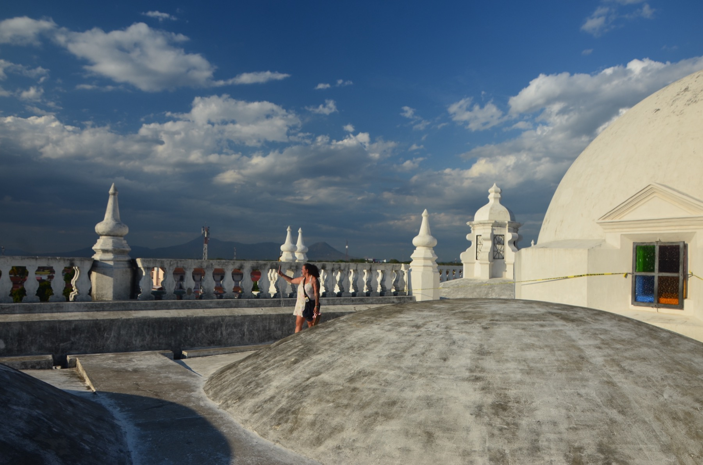

Consejos prácticos, experiencias y rutas con guía local
21. 5. 2025
Muchos preguntan si Nicaragua es segura y cómo se viaja por el país. Respondo con sinceridad y experiencia real en terreno.
Nicaragua es tierra de volcanes, ciudades coloniales como Granada y León y naturaleza intensa. Es más económica que Costa Rica y mucho menos masificada.
La seguridad depende de la zona y del sentido común. Con un guía que conoce el destino, el viaje es seguro y muy enriquecedor.
Preparo viajes de 12, 13 y 15 días. Escríbeme y vemos la mejor opción para ti.
Ver viajes Escribir a Martin